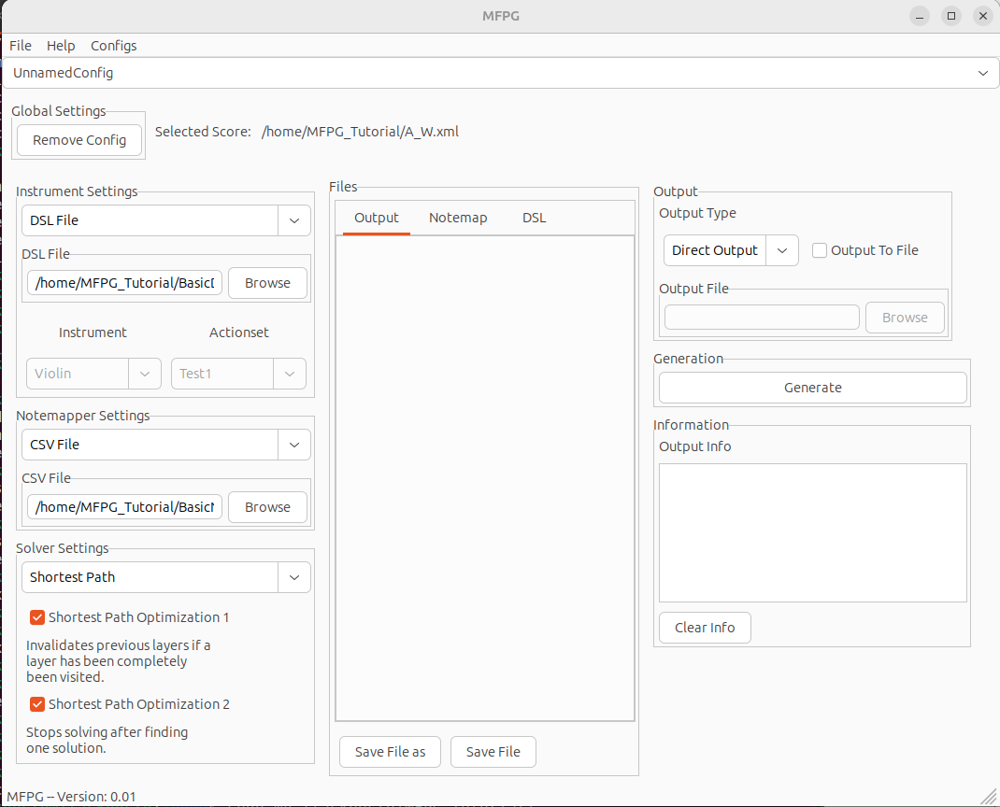
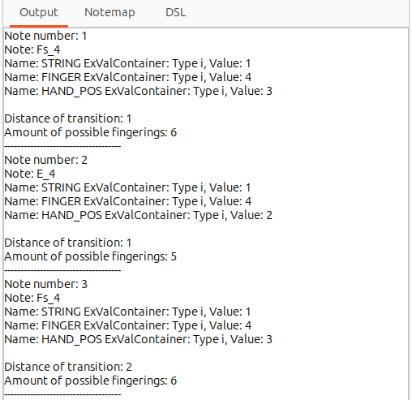

In this tutorial we show a simple example of how to use MFPG via the
GUI. If the CLI is the preferable interface, then this
tutorial should still be applicable, with the only changes being how the
different options are selected. For an overview on how these options are
selected, see the GUI Guide or the
CLI Guide respectively.
For this example we will need three different files, the music
score in the form of a musicXML file (a file format most notation
programs allow as export formats), the MFPG DSL file, and a
CSV Notemapper file. These files and their purpose will be explained
in their respective sections, and in this tutorial we will be using premade
files taken from the
GitHub repo.
When you start the MFPG GUI it looks for a file called
.mfpg_configs.xml in the current directory. Most likely, this file
is not present when you first run the program, and you will be asked whether
you want to create this file in the current directory. This file contains
information about stored configurations. a configuration is a
selection of GUI settings, such as which output file is used or
whether the DSL file or Presets is used as
Instrument Settings.
Almost any setting you can set in the GUI can be stored in a
configuration. The purpose if this is to simplify usage when the GUI
is restarted or when different configurations are desired depending on
situation.
New configurations can be temporarily created in the program
by using the configs menu at the top of the window, and selected
in the dropdown bar underneath. Note that creating a new configuration
does not create a new stored configuration, and any new
configuration that is not stored will be deleted when the program is closed.
If no .mfpg_configs.xml file is found then storing and loading of
configurations is disabled. Temporary configurations can be removed by using
the Remove Config button underneath the configuration selection.
However, we will not be working with configurations in this tutorial.
Next we will discuss the Notemapper. The Notemapper is
a necessary user-defined component of the program which dictates all
physical ways to play each note on an instrument. This means that
the Notemapper will specify things like:
The A 4 Note can be played on the D-String using
Finger 2 in Hand Position 3
However, since almost all notes can be played in multiple different
ways, the same Notemapper would also specify:
The A 4 Note can be played on the A-String using
Finger 0 in Hand Position 0
(Which specifies that A 4 can be played on the open A-String)
This is repeated until all ways to play all playable notes
have been specified. There is no restriction on whether some of the values
are repeated in different specifications, the same Notemapper could
also say:
The A 4 Note can be played on the D-String using
Finger 3 in Hand Position 2
The Notemapper will therefore limit which physical attributes
can be used in the MFPG DSL (see next section). In these examples,
the physical attributes are String, Finger, and
Hand Position. These are the only attributes available in the premade
Notemapper we are going to use.
To select this Notemapper we will first need to download the CSV
file from the Github
repo found under the 'resources/dsl_files/' directory called
BasicNoteMapper.csv. Alternatively, it can be downloaded by clicking
here. This file is
then used in the GUI by selecting CSV Notemapper under
Notemapper Settings, and then selecting the file in the file selector
CSV File underneath.
For this section we will be using the MFPG DSL. In order for the
program know which notes can be played on which strings of the instrument,
it must be told the specifics of the instrument by the user. We must also
define what is called an Actionset which will contain the
preferences of the user when it comes to deciding which fingering position
is superior when there is a choice between multiple fingering positions when
playing a note. We are going to start with a premade DSL file
and make some adjustments. In order to get an understanding on how the
MFPG DSL files are written and the syntax of the DSL you
should read the DSL Guide.
The DSL file we will use contains a very basic actionset,
the file can be found in the
GitHub repo in the
'resources/dsl_files/' directory named
DSL_test_configuration_1.mfpg
or be downloaded here
. Once the file
has been downloaded the file can be selected by switching the
Instrument Settings to DSL File and then selecting the file
in the file selector underneath. Before we make any modifications or
considerations of the DSL file, let us set up the rest of the
settings to make it easier to test the modifications we make later on.
We will be using a test case from the
GitHub repo found in the
directory 'tests/cases/', we will use the A_W.xml test case (
which can also be downloaded directly
here.).
This file can then be selected as a target using the file menu at the
top of the window.
We also have the option of selecting the solver. This option is likely to be
moved to some hidden advanced section as there is effectively no reason to
use any solver but the shortest path one currently, so that is the one we will
use. The two optimization checkboxes should also be used, as they improve
performance of the solver.
Next, we can select whether we want the output to be written to a file or
just written directly to the Output tab in the files window
in the middle. If a file is selected the file will instead be shown in the
Output tab. We will not select an output file for this example.
Finally, we can also select the type of output we want to see, currently only
two options are available, a CSV output (comma-separated values) or a
direct output. The direct output is easier to read for a human, so we will
select that.

Now we can start considering the DSL file relative to our preferences.
We can see
the DSL file by selecting the DSL tab in the files
window, where we can then make changes to the file. Note that no changes are
made until the file is saved using the buttons at the bottom of the files
window. Alternatively, this file can be modified using any text-editor
of your choice if you find it easier to do so, but then you must re-select
the file using the DSL filepicker after making any changes.
Section is subject to change as the base DSL file changes over time
The first three parts of the DSL file are parts which we will not
modify:

If you want to further validate that your output is correct for this setup, you can switch the output to be CSV Output, tick the Output to File checkbox, select an output file, generate, and then compare the file with this.With the program confirmed to work as intended, we can now look at making some changes to the DSL file improve the output. We have to remember that the output is only right or wrong in relation to the DSL file. The DSL file in turn is merely a set of rules on how to evaluate a transition between notes. Therefore, what we want to achieve with the DSL file is a set of rules that mirror the rules we use when we figure out the next fingering position manually. This means that writing a DSL file that perfectly represents our own preferences might require many further small modifications over time. However, this also means that once we arrive at a DSL file that captures our preferences very well, we have a very effective tool for easily generating new and accurate fingering position sequences.
FI = FINGER - FINGER != 0 : FINGER - FINGER (true),
FI = FINGER - FINGER != 0 : 1 (true),
HP = HAND_POSITION - HAND_POSITION != 0 : HAND_POSITION - HAND_POSITION (true),
HP = HAND_POSITION - HAND_POSITION != 0 : HAND_POSITION - HAND_POSITION + 1 (true),
As discussed in an earlier section, our string action, ST, is only ever active if there is a transition where we change from one string to an adjacent string. Generally, switching to an adjacent string should probably not incur any cost if we also switch finger. However, if we do not switch finger but also switch string, we might have a situation that should incur some cost. To achieve this, we could change the ST action like so:
ST = STRING - STRING == 1 && FINGER - FINGER == 0 : 1 (true),
N_FI = FINGER - FINGER == 0 : 0 (true),
ST = STRING - STRING == 1 : 1 (false),
ST N_FI true,
N_FI REST_F false,
N_FI REST_T false,
ST ST_NR true,
To finalize our DSL file we will add three more rules, these will be
written in plaintext and the solution hidden so you can attempt them on your
own first.
As we discussed in a previous section, it might make sense to punish larger
hand position shifts. We should add a rule for this.
3_HP = HAND_POSITION - HAND_POSITION > 3 : 2 (true),
3_HP REST_T false,
3_HP REST_F false,
HIGH_HP = to HAND_POSITION > 5 : 3 (true),